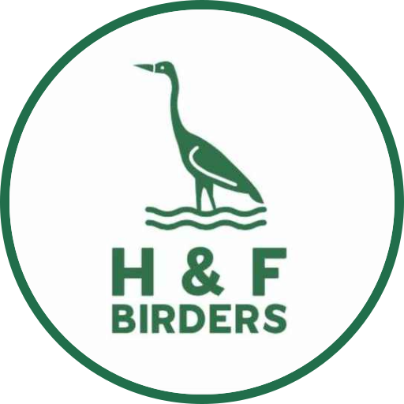

![]()
Bird Arrivals
Expected seasonal arrivals into the borough

SpeciesLikely originWindowRemarks
Discover which birds are expected to arrive in and depart from Hammersmith & Fulham, alongside actual sightings this month at local eBird hotspots.
Expected seasonal arrivals into the borough

Expected seasonal departures from the borough
Loading the NBN borough record list…
eBird records from borough hotspots this month
Counts show species reports submitted by each public eBird account. Bird totals are summed only where a count was provided.